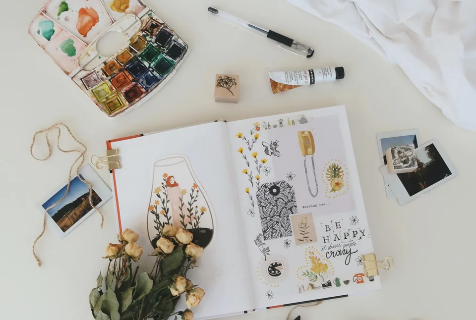

Über mich
Caroline Stupf
Verwandlungskünstlerin, Wohnberaterin und Gründerin von stylisch.
Ich bin fast immer in Bewegung, liebe gute Gespräche, Abwechslung, Reisen und alles Schöne und Feine. Meine Arbeit verbindet Ästhetik, praktische Erfahrung, Kreativität und Menschlichkeit.
Hintergrund
Mit Blick für Farben, Materialien und das Leben im Raum
Aufgewachsen in der Zürcher Altstadt, faszinierte mich früh alles rund um Farben, Materialien und schönes Wohnen. Nach der Wirtschaftsmatura ging ich in die USA und schrieb mich dort für Interior Design ein.
Seit über 17 Jahren bin ich mit stylisch in der deutschsprachigen Schweiz unterwegs. Meine Projekte reichen von kleinen Veränderungen in einzelnen Räumen bis zu umfassenden Neugestaltungen.

Arbeitsweise
Gutes Wohnen ist persönlich
Ich mag gutes Design, aber Marken stehen nicht im Vordergrund. Es muss gefallen, funktionieren und zum Ort passen. Schönes Wohnen soll bezahlbar bleiben und nicht von Labels abhängen.
Ich plane nicht nur, ich packe auch an: streichen, hämmern, sägen, Dinge mitbringen, ausprobieren und mit Freude nach der passenden Lösung suchen gehören zu meinem Verständnis von Gestaltung.

Einblicke
Inspiration findet man überall
Inspiration kann um die Ecke in einem Café warten, auf Reisen, in Zeitschriften oder in der Natur. Es lohnt sich, die Augen offen zu halten - und aus vielen Eindrücken eine Lösung zu formen, die im echten Alltag funktioniert.
Nächster Schritt
Lernen wir Ihren Raum kennen
Wenn Sie möchten, dass ich einen Blick auf Ihre Wohnsituation werfe, schreiben Sie kurz, worum es geht.